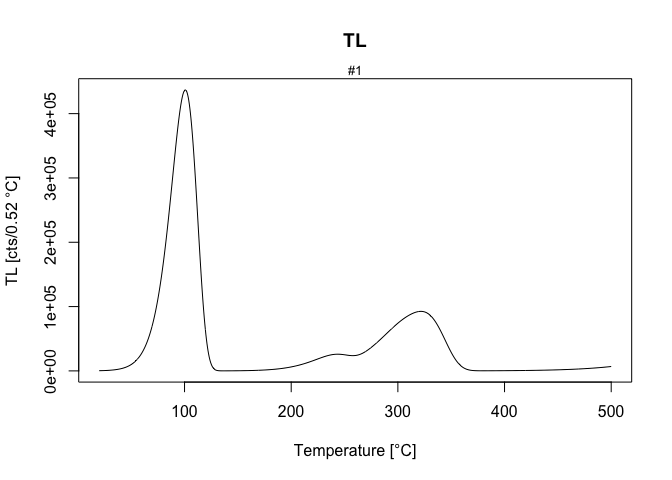

The R package ‘RLumModel’ by Johannes Friedrich (University of Bayreuth, Germany), Sebastian Kreutzer (IRAMAT-CRP2A, Université Bordeaux Montaigne, France) and Christoph Schmidt (University of Bayreuth, Germany) provides a collection of various R functions modelling luminescence signals in quartz and Al2O3, based on energy-band models.
For an introduction and further details, visit the RLumModel homepage.
Installation
Install the package
To install the stable version from CRAN, simply run the following from an R console:
install.packages("RLumModel")To install the latest development builds directly from GitHub, run
if(!require("devtools"))
install.packages("devtools")
devtools::install_github("R-Lum/RLumModel@master")To install a developer build other than ‘master’, replace the term ‘master’ in the codeline by the name of the wanted developer build.
Using RLumModel
Simple Example
model <- "Bailey2001"
sequence <- list(
IRR = c(20, 10, 1),
TL = c(20, 500, 5))
model.output <- model_LuminescenceSignals(
model = model,
sequence = sequence,
verbose = FALSE
)
Note
The package comes without any guarantee!
Please further note that this version is a development version and may change day by day. For stable branches please visit the package on CRAN.
License
This program is free software: you can redistribute it and/or modify it under the terms of the GNU General Public License as published by the Free Software Foundation, either version 3 of the License, or any later version.
This program is distributed in the hope that it will be useful, but WITHOUT ANY WARRANTY; without even the implied warranty of MERCHANTABILITY or FITNESS FOR A PARTICULAR PURPOSE. See the GNU General Public License for more details.